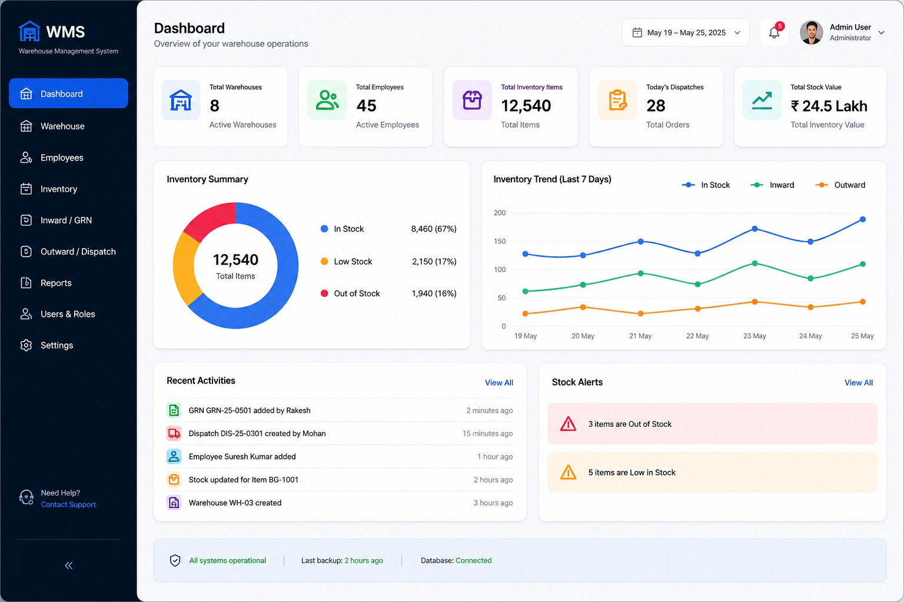
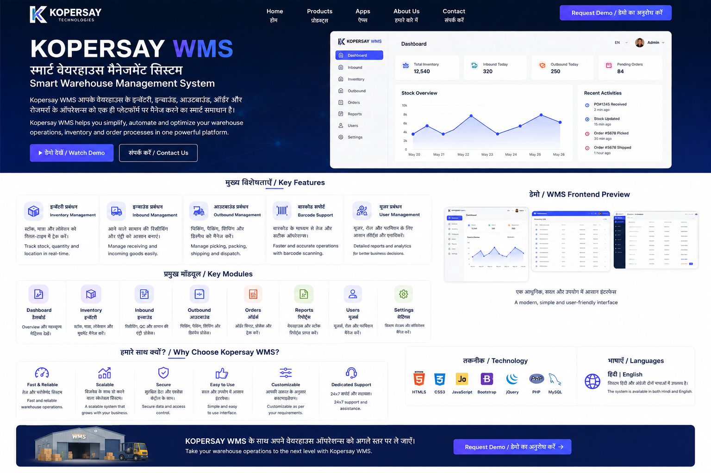

A modern Warehouse Management System for inventory, warehouse operations, inward, outward, employees and reporting.
Back to WMS

Explore the same module structure used in the Kopersay WMS website.
Contact Kopersay Technologies for the WMS product experience.
Contact Us